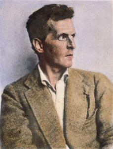
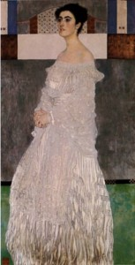
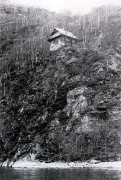

Wittgenstein: Dahinin Görevi 1.Bölüm
Wittgenstein açık ara 20. yüzyılın en büyük filozufu olarak kabul edilir prenses, daha hayattayken bir çok insanı hem etkilemiş hem de sinir etmiştir. Kolay bir lokma değildir kitapları da, kişiliği de, hayatı da…Bu yazıda bu dahi amcamızın ilginç hayatından biraz bahsetmek istiyorum.
Hikayemiz Viyana’da 26 Nisan 1889’da yılında başlar. Ludwig, Karl ve Leopoldine Wittgenstein’in oğlu olarak, Avusturya-Macaristan imparatorluğunun en zengin ailerininden birinde 8 kardeşin en küçüğü olarak dünyaya gelir. Karl Wittgenstein demir çelik sanayiinde imparatorlukta tekel kurmuştur ve dünyanın en zenginlerinden biri sayılmaktır. O dönemde Viyana’da olmak vardı anasını satayım demek ister bu gönül. Viyana’nın avrupa kültürünün başkenti olduğu (bizim İstanbul gibi çorbadan bi başkentlik de değil hani) bu devrede, Rodin, Klimt, Brahms, Strauss, Mahler gibi aşmış figürler Wittgenstein’ların salonun düzenli konuklarıydı. Klimt ablasının bir portresini bile resmetmiştir, ah benimde bir Klimt portrem olsa ne güzel olurdu be prenses. Wittgenstein’ların allah vergisi bir de müzik yetekleri var ki sorma, abisi Paul dünyaca ünlü bir piyanist, bütün kardeşler aşmış derecede müziğe yetenekli Wittgenstein da dahil.
Ama para saadet getirmiyor be prenses. Babası Karl büyük bir işadamı olmasının yani sıra, çok güçlü bir baba figüru, çocukları için en iyi olanın ne olduğunu bilen (ticaret) ve bunu çocuklarından bekleyen. Ama çocuklar, hepsi çok yetekli ve zeki olmalarına rağmen, babalarının istediği bir hayatı istemiyorlar. Adamlar sanatçı olucaz diye tutturmuşlar. Sonuç, ciddi aile içi çatışmalar, depresyon ve intihar. Wittgenstein’in 4 erkek kardeşinden üçü intihar ediyor. En büyük kardeş Hans, 4 yaşındayken ilk bestesini yapan çocuk dahi, 1902 yılında Havana’da intihar ediyor. Üçüncü kardeş yine müzisyen olmak isteyen Rudolf, iki yıl sonra evden kaçıp 1904’de Berlin’de bir otel odasında intihar ediyor. Bu iki intihardan sonra babası ipleri bırakıyor, çocuklarına ne isterlerse onu yapmalarına izin veriyor. Ama bu bile yetmiyor, erkek kardeşi Kurt birinci dünya savaşı sonunda Ekim 1918’de kendi komutasındaki birlikler toplu katliam yapınca, gururuna yediremeyip kendini vuruyor.
Ludwig Wittgenstein babasının gözdesi tabi. Küçük kardeşleri bilirsin, komiktirler. Büyük kardeşler ailenin değerlerini benimsemişse, küçük kardeşler isyankar olur genelde. Büyük kardeşler isyankarsa, küçük kardeşler ailenin kuzusu olur. Wittgenstein da öyle yapar, abileri işadamı olmamak için babaları ile yıllarca çatışınca, bizimkisi gider mühendislik okur tam babasının isteyeceği şekilde babası istemeden. Makine mühendisliğinde lisans okuduktan sonra, havacılık mühendisliğine sardırır ve Manchester’de doktorasına başlar. Tabi sene 1908, bu öyle ÖSS’de İTÃœ uçak mühendisliğine girmek gibi değil. Düşün ki daha Wright kardeşler 5 yıl önce ilk uçusu gerçekleştirmişler, hani aerodinamiğin daha emekleme devreleri.
Manchester’da atmosferin üst tabaklarında uçan uçurtmaların davranışı ve pervaneli motor sistemleri üzerine çalışma yaparken, matematiğin temelleri üzerin ilgilenmeye başlar. Mühendislikten matematiğin temelleri gibi mantık ve felsefe yüklü bir konuya nasıl zıpladığını bana sorma prenses, hiçbir fikrim yok. Hatta ben Principia Mathematica gibi bir kere elime alıp baktiğim, şahsen onaylayabilceğim aşmış teknik bir kitabı ilgilenip bir insanın nasıl okuyabildiğini daha idrak edemedim. Bir de üzerine benzeri bir abideyi hürriyet anıtı olan Frege’nin Aritmetiğin Temellerini okur. Wittgenstein okumakla kalmaz, bir de üstüne üstlük bu kitaplarda yazanları anlar ve hatta kendisi kitapta eksik kalan yerler üzerine akıl yürütmeye başlar.
 Wittgenstein orada da durmaz ve kalkar Frege’yi ziyaret etmeye gider kendi fikirlerini tartışmak için. Frege’nin Wittgenstein’in fikirlerini darma dağan edip kapısına pas pas ettiği söylentileri varsa da, çocuğun kalbini kırmamak için “Bak evladım ben yaşlandım artık, gördüğün gibi sinirlerim de pek sağlam değil. Ama bu konularda İngiltere’de çalışan bir beyefendi var, belki o sana yardımcı olur” der ve Wittgenstein’i Bertrand Russell’a paslar. Gururu kırılan Wittgenstein, orada bu sayfayı kapatıp araştırmalarına dönmek yerine Wittgenstein’a has keçi gibi inatçılığı kendi bildiğinden vazgeçmeyişi ile Russell’i ziyarete gider ve Cambridge’de Trinity kolejinde Russell’in derslerine katılmaya başlar.
Wittgenstein orada da durmaz ve kalkar Frege’yi ziyaret etmeye gider kendi fikirlerini tartışmak için. Frege’nin Wittgenstein’in fikirlerini darma dağan edip kapısına pas pas ettiği söylentileri varsa da, çocuğun kalbini kırmamak için “Bak evladım ben yaşlandım artık, gördüğün gibi sinirlerim de pek sağlam değil. Ama bu konularda İngiltere’de çalışan bir beyefendi var, belki o sana yardımcı olur” der ve Wittgenstein’i Bertrand Russell’a paslar. Gururu kırılan Wittgenstein, orada bu sayfayı kapatıp araştırmalarına dönmek yerine Wittgenstein’a has keçi gibi inatçılığı kendi bildiğinden vazgeçmeyişi ile Russell’i ziyarete gider ve Cambridge’de Trinity kolejinde Russell’in derslerine katılmaya başlar.
Russell abimiz ise bu devrelerde artık teknik kariyerini noktalamak üzeredir. Whitehead ile birlikte Principia Mathematica üzerine çalıştığı 2 yıl, beyninden de bir şeyleri alıp götürmüştür. Sevgililerine “artık ben teknik konularda bir şey yapamam, eserim yarım kaldı, ah keşke, keşke bir parlak öğrencim olsa ve eserimi tamamlayabilse” demektedir garibim. Wittgenstein’in mumla aradığı öğrenci olup olmadığı ise meçhuldur. Russell’in bu devrelerde tuttuğu günlükler git gellerinin en güzel tanığı. Bir gün “Yeni bir öğrencim var, zeki birisine benziyor, eserimi tamamlayabilir”, bir iki gün sonra “Sanırım yanılmışım, bu elemandan bir caçık olmaz”, bir iki gün daha sonra “Ya aslında bazen çok enteresan şeyler söylüyor, acaba?”, ve bir iki gün daha sonra “Hayır, bu herif şu katılmamış bir salak. Bu adam Hanya ovası, Principia Mathematica Konya ovası. Zamanımı boşa harcıyorum.” Wittgenstein da çok emin değil kendi felsefi yeteneklerinden. Habire Russell’i sıkıştırıp, “Abi bak gözünün yağını yiyim doğruyu söyle, varsa bir yeteneğim abanıcam bu işe, yoksa Manchester’a dönüp uçurtmalarımla oynamaya devam edicem” demektedir.
Ama zamanla Wittgenstein Russell’i sadece matematiğin ve mantığın temelleri üzerine yaptığı çalışmalarının
veliahtı olduğa değil, aynı zamanda amansız eleştirileri ile Russell’in artık derin felsefi çalışmalar yapamayacak düzeyde olduğuna da ikna eder. Öğrenci ve hoca koltukları değiştirir ve Wittgenstein Russell’in hocası olmaya başlar. Wittgenstein’da ikna olmuştur artık, bu gazla çalışmalarına hız verir. Bu arada babasının vefat haberi gelir ve kendisine kalan vasiyetle bizim Ludwig Avrupanın en zengilerinden biri olur. Allaha şükür felsefecinin parayla işi olmaz, en derin felsefi araştırmalar bile bi tas çorba ve kuru ekmekle yürütülebilir. Wittgenstein’da bunun farkında olarak vasiyetinin büyük bölümünü Rilke, George Trakl gibi Avusturyalı sanatçılara anonim olarak bağışlar. Bu arada Cambridge’nın akademik ortamları entel dantel muhabbetleri onu baymaya başlamıştır. Burada yeterince derin düşünemiyorum diye Norveç Fyordlarında Skjolden kasabası yakınlarında bir klübeye taşınır ve iki yıl kadar kendini tamamen çalışmalarına adar.
Bu devrede Tractatus-Logico Philosophicus adlı kitabının ön taslağını oluşturucak Mantik isimli kitabını yazarsa da, çalışmaları birinci dünya savaşının patlak vermesiyle yarıda kalir. Savaştan Wittgenstein’a ne demeyin, Wittgenstein savaşın patlak vermesiyle Cambridge’de pasifist Russell dahil bir çok arkadaşının ağzını iki seksen açık bırakacak bir kararlıkla Avusturya-Macaristan imparatorluğu ordusuna gönüllü olarak yazılır, çalışmalarını yanına alır ve savaşmaya gider. Motivasyonun milliyetçi duygular olmadığı aşikar, Avusturya-Macaristan imparatorluğunun Wittgenstein’in pek umrunda olduğu sanmıyorum. Wittgenstein’in derdi ölümle yüzleşerek kendinin ne olduğunu anlama çabası daha cok.
Bu ölümle yüzleşmeye giden cengaver filozofu tabi cephede bir süpriz bekler. Komutanlarına “Beni ön cephelere çatışma hattına gönderin” dediğinde komutanlarının surat ifadesini çok merak ediyorum açıkçası. Muhtemelen içlerinden “Kim bu gerizekalı ahmak, mühendis olmasaydın ben seni ölüme göndermeyi bilirdim ama şükret ki sana cephe gerisinde ihtiyacımız var” demişlerdir muhtemelen. Wittgenstein önce bir gemide mekaniker, daha sonra ise cephe gerisinde çatışmadan uzak mühendislik yeteneklerini kullanabilceği bir top tamirhanesinde konuşlandırılır. Wittgenstein’in keçi gibi inatçı olduğundan bahsetmiştim di mi prenses? Cephe gerisinde olduğu bu süre boyunca her ay üstlerine mektup yazıp çatışma hattına transfer edilmesi için talepte bulunur yılmadan.
Tam cep gerisindeki hayatına alışmış, felsefe ve inanç gibi konuları tartışabileceği bir iki tane arkadaş edinmiş, ve Tractatus üzerine çalışmaya tekrar başlamışken bir gün üstlerinden bir mektup alır: İsrarlı talepleri kabul edilmiştir, Rusya cephesine gözcü olarak atanmıştır, yuppi. Gözcü ne ola ki diyorsan prenses hemen açıklayayım, sıcak çatışmanın olduğu bölgelerde hava kararınca çatışma durur ve bu süre içerisinde iki tarafta öteki tarafı gizlice gözlemesi ve bilgi toparlaması için gözcülerini gönderir. Tabi, sniperların da bu ajanları gördüğü yerde vurmak için bütün gece nöbet tuttuğu söylememe gerek yok her halde. Namlunun soluğunu omzunda hissettiğin uzun, karanlık ve adrenalin yüklü gece görevleri. Wittgenstein istediğine kavuşmuştur sonunda, ama romantize ederek hayalini kurduğu şey gerçekte ise buz gibi soğuk ve kat ve kat daha korkunçtur. Vasiyetini hazırlar, her gece göreve giderken tanrıdan ona cesaret vermesi için dua eder. Her gece bir sonra ki gündoğumunu görüp göremeyeceğinden emin olmadan yola çıkar, kelle koltukta. Sonu belirsiz ve ölüm hep çok yakında…
NazIm


{kind=link}
{kind=link}
{kind=link}
{kind=link}
Devamı ne zaman? 🙂
Yazının devamını sabırsızlıkla bekliyorum kalemine bereket yalnız İstanbul’ un çorbadan başkentliği yorumu tam yazının il paragrafında bir şok etkisi yarattı diyebilirim.
Eyvallah, yazinin devami kismetse yarin geliyor 🙂 Istanbul’un corbadan baskentligi konusunda hafif sakayla karisik bir dokundurmaydi o. Hani zamanin Viyana’sina bakiyorsun, o devre orada yasayan ve ureten insanlara bakiyorsun bir de su anki Istanbul’a bakiyorsun Avrupanin verdigi bir unvanla bir anda baskentlige soyunusuna bakiyorsun, cok dogal gelmiyor. Ben su an dunyanin kultur-sanat baskentini secsem bu Istanbul olmazdi, her ne kadar kulturune tarihine saygim sonsuz olsa da 21. yuzyili sekillenderen sanat ve kultur akimlari Istanbul’da uretilmiyor ne yazik ki. Keske uretilse! Ben secsem New York, San Fransisco falan derdim her halde. Avrupa’da da Berlin olurdu adayim. Tabi baya da bi iskembeden hissiyaten atiyorum aslen 🙂
Tabi Newyork hersene Başkent seçilebilir 🙂 Fakat İstanbuldaki kültür ve sanat akımları her nekadar dünyada baskın olmasada bence sanat üretilmediği anlamına gelmiyor. Tabi biraz sunum ile alakalı birde Batılı sanat anlayışının ne kadar baskın olduğu ile ilgili. Bilmiyorum İstanbul daki kültür sanat camiası bu konuda ne düşünüyor? Onlara sormak lazım.
Bende Berlin hastasıyım fakat sende bir ( nasıl denir ) Alman hayranlığı seziyorum sanki Nazımcım, yanlışsam düzelt lütfen.
Ayipsin, ich mochte ein kofte, Deutschland über alles! Almanlari severim, cok da saglam adamlar cikarmislar(filozoflarinin ozellikle hastasiyim) ama oyle bir asiri hayranligim yok yaw. Berlin’i dogma buyume istanbullu simdi berlin’de yasayan kuzenimden kopya cektim aslen. en son konustugumuzda berlin’in son yillarda ne kadar hareketlendigini, 20, yuzyilin basinda Paris gibi kendine has alt kulturleri ve sanatcilari ile Avrupa’nin su aralar en dogal en renkli sehri oldugunu soyluyordu, onun yalancisiyim valla 🙂
Bir destek… İlgini çekecektir…
Bkz: http://zaferyal.kuzeyyildizi.com/blog/?tag=ludwig-wittgenstein